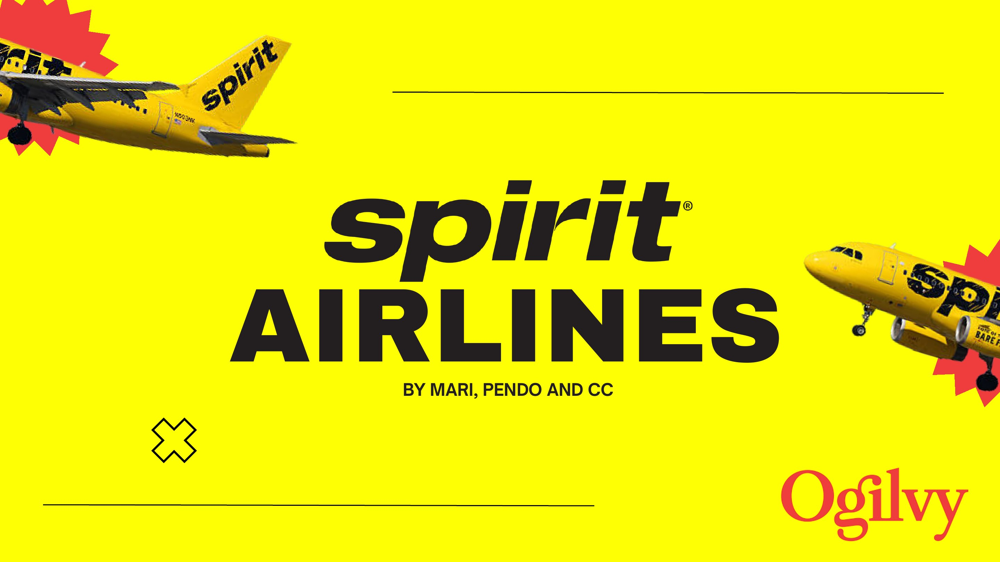
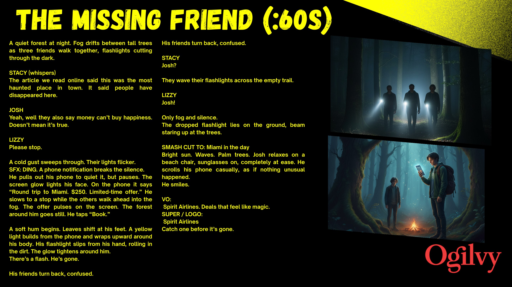
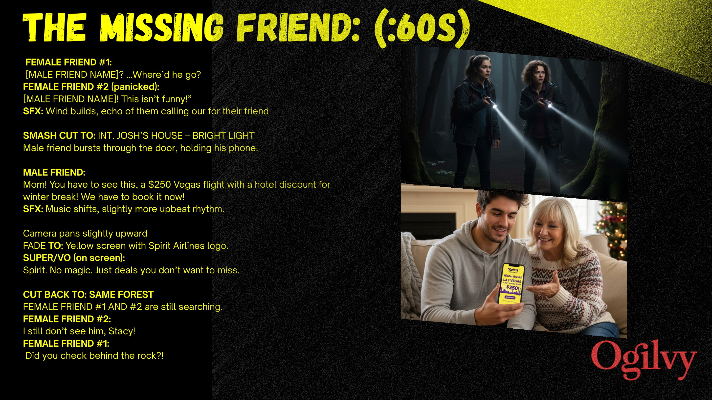

Spirit Airlines
A deal so good it makes the rest of the world disappear.

Make a low fare feel impossible to ignore.
Spirit's strongest product truth is the double-take: the instant a price looks so good that everything else stops mattering. The brief was to turn that tiny reaction into a memorable brand story.

A great deal temporarily rewrites reality.
When the right flight appears, attention collapses around it. Plans change, priorities disappear and the destination suddenly feels closer than whatever is happening in front of you.
The Missing Friend.
A haunted-forest setup turns the booking moment into a literal vanishing act. Josh sees a limited-time Miami fare, taps Book and disappears in a flash—leaving his friends, and the horror genre, behind.

From fog to full sun in one cut.
The sixty-second script contrasts a tense night forest with a bright Miami beach, using Spirit yellow as the portal between them. The tonal reveal lands the promise: deals that feel like magic.
From thought
to touchpoint.
- 60-second film concept
- Finished script
- Storyboard direction
- Tagline system
“The fare is the proof; the story's job is to dramatize the irrational speed with which a good price changes your mind.”